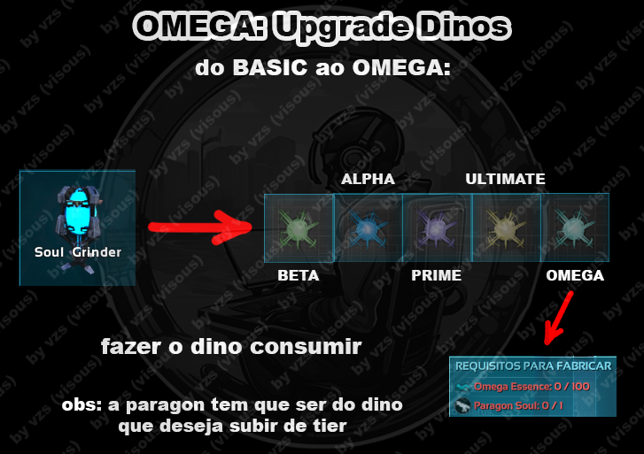
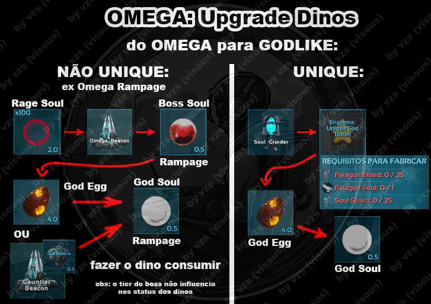
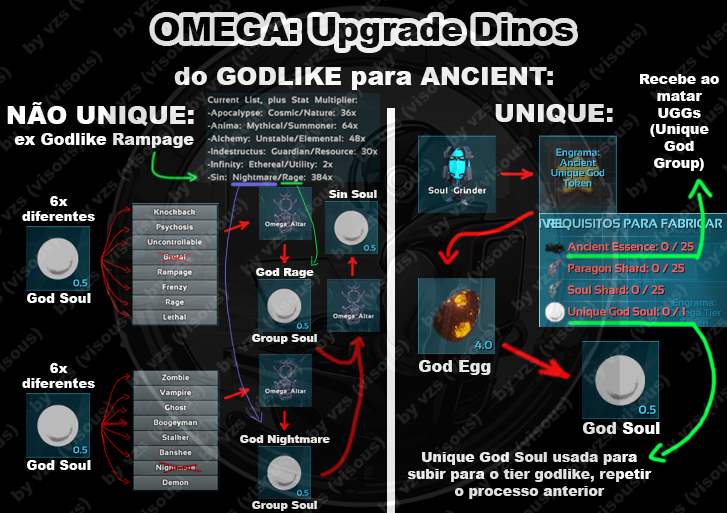
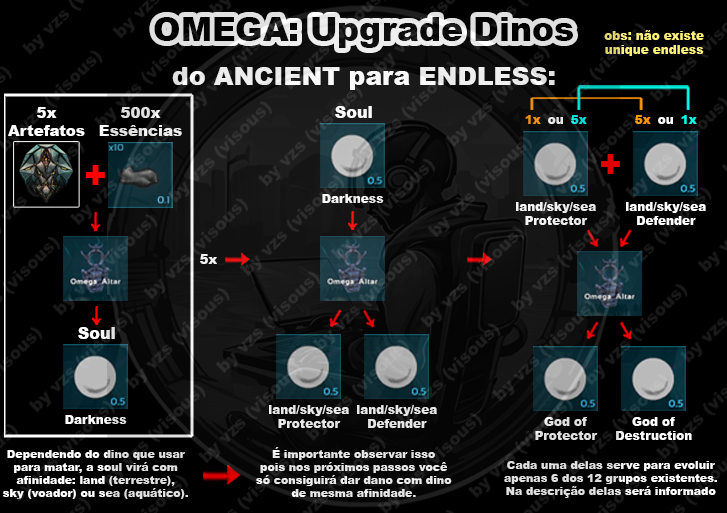

Mod · guia de progressão
Um roteiro do começo da sobrevivência aos chefes Beacon, Gods e Group Gods. Este primeiro conteúdo foi traduzido e organizado a partir das telas do guia dentro do jogo.
Ark Omega é um mod de criaturas geradas dinamicamente: o guia do jogo fala em mais de 200 mil criaturas possíveis. Cada criatura compatível pode surgir com uma combinação de mais de 100 habilidades e um de seis tiers de atributos. Depois de preparar as primeiras domas, a progressão leva a milhares de chefes, conteúdo de meio de jogo e sistemas de imbue e drops aleatórios.
Guia em expansão: este material é parcial e não representa todo o conteúdo de Ark Omega. Novas informações e seções podem ser acrescentadas a qualquer momento em atualizações futuras.
Fonte no jogo: com exceção dos diagramas creditados ao VZS, este conteúdo foi traduzido do guia original disponível dentro do ARK. Pressione F1 no teclado para consultar a versão original em inglês.
Imbuements: itens encontrados em criaturas selvagens podem modificar atributos de equipamentos, selas, dinos e do próprio jogador. O guia in-game marca a seção de imbuements como WIP; por isso, esta versão explica o sistema em linhas gerais sem inventar uma lista de efeitos.
Os nomes de estruturas, itens, variantes e tiers aparecem em inglês quando esse é o nome usado no jogo. Assim fica mais fácil encontrá-los no inventário, no guia Omega e nas estações.
Ao criar um personagem, você recebe o newbie buff, um bônus temporário visível na lista de efeitos no canto inferior direito. Enquanto estiver ativo, ele reduz o dano recebido, aumenta o Magic Find (chance de encontrar itens), concede experiência extra e faz criaturas selvagens ignorarem você, a menos que sejam provocadas. Aproveite esse período: quando o efeito acabar, não será possível recuperá-lo e as criaturas voltarão a atacar.
Use os itens iniciais para acelerar a coleta:
Priorize, nesta ordem:
A progressão de doma depende de uma escada de rações (Kibble) por grupo e tier. Comece pelos Dodôs vanilla: segundo o guia do jogo, cerca de 80% dos Dodôs são vanilla. Dodos podem botar ovos mesmo sendo machos. Use a Knockout Club para nocauteá-los e dê berries.
Construa um Egg Collector cedo. Ele é muito útil para produção de ovos. Espere os Dodôs botarem ovos ou saia e volte depois; o coletor pode recolhê-los. Use qualquer ovo não fertilizado encontrado para fabricar a ração Base na Kibble Machine.
| Ração | Feita com | Domestica |
|---|---|---|
| Base Tier Kibble | Qualquer ovo não fertilizado | Somente Base |
| Beta Tier Kibble | Ovos Base | Beta e tiers abaixo |
| Alpha Tier Kibble | Ovos Beta | Alpha e tiers abaixo |
| Prime Tier Kibble | Ovos Alpha | Prime e tiers abaixo |
| Ultimate Tier Kibble | Ovos Prime | Ultimate e tiers abaixo |
| Omega Tier Kibble | Ovos Ultimate | Omega e tiers abaixo |
Continue integrando fêmeas, produzindo ovos e subindo a escada de rações até chegar ao tier Omega em cada grupo. Depois, avance para a próxima etapa.
O começo se divide em quatro frentes: conseguir tames, construir a base, fortalecer o personagem e se preparar para os chefes.
Selas Unique e Legendary: podem cair de criaturas selvagens. Só funcionam na espécie indicada, salvo exceção explícita; não servem automaticamente para versões Tek, Skeletal ou outras variantes. Dão bônus expressivos. Uma sela Unique tem uma pequena chance de ser Legendary, que é ainda mais poderosa. Consulte o Omegadex clicando na criatura ou a aba Unique Saddles do equipamento.
Dino Affinity Medallions: podem cair de qualquer criatura selvagem. São equipados no espaço Medallion do jogador e dão bônus à criatura montada do tipo correspondente; não afetam versões Tek, Skeletal etc., salvo indicação do próprio item.
Quest Scrolls: podem cair ao matar dinos. Podem recompensar com poções de experiência máxima, Paragons, chaves de baú e outros itens. Algumas missões pedem, por exemplo, matar a pé, montado em uma espécie específica ou uma espécie determinada. São uma boa fonte inicial de Paragons.
Além da Omega Workbench, Imbue Workbench, Kibble Machine e Egg Collector, o guia destaca estas estruturas:
O modo No-Tame permite fortalecer o jogador para avançar por boa parte do mod usando o próprio personagem. Consulte a seção de ranks do guia e cumpra os requisitos: os ranks dão redução de dano e vida extra. Imbua e amaldiçoe o equipamento com frequência; Magic Find ajuda a encontrar mais drops. Reúna itens e armas Unique e use poções como Stoneskin para defesa, Rampage para dano e Spiritual para peso e deslocamento.
Quando tiver tames Omega prontos para combate, Paragons e uma ou duas selas Unique, desbloqueie o engrama Omega Beacon matando uma criatura selvagem do tier Omega. A partir daí, comece a enfrentar Beacon Bosses.
Titans selvagens não são necessários para avançar nessa sequência, mas são importantes para várias funções e itens. A dificuldade dos chefes também depende de configurações do servidor: elas afetam a rapidez para criar um exército e o custo de perder tames.
Exemplo da tela enviada: Mating Interval Multiplier 1,502; Breeding Mode 1; Overall Difficulty 1,502; Next Titan Spawn Chance 0. Esses valores refletem aquela partida/servidor, não são valores universais do mod.
As variantes têm funções diferentes. Absorbent cria uma bolha que redireciona todo o dano recebido e serve como tanque. Variantes de Resource têm muita redução de dano e sobrevivência, mas costumam causar pouco dano. Frenzy e Banshee aumentam o dano dos seus tames e o dano recebido pelo chefe, respectivamente. Para dano alto, procure Volatile, Rampage, Meteor ou Thunderstorm. Disruptor e Element podem impedir habilidades especiais; Siren e Gorgon podem impedir o chefe de atacar.
Este é o primeiro grupo de chefes, a menos que você já tenha provocado um Titan selvagem. O engrama Omega Beacon é liberado ao matar uma criatura selvagem de tier Omega e pode ser fabricado na Omega Workbench. O Beacon também invoca criaturas selvagens domáveis; com cem Souls, invoca um Beacon Boss.
Beacon Bosses não podem ser domados: é preciso derrotá-los. Eles deixam uma pequena quantidade de loot, incluindo Element, e uma Boss Soul brilhante no chão. Também liberam Tek Engrams, os engramas de Boss Kibble e o God Egg. Continue farmando-os com cem Souls para obter drops e Boss Essence, usada em imbuements melhores e na fabricação de certos itens; ou use a Boss Soul no God Egg para invocar o God daquela variante. O tier do God acompanha o tier da Soul. Atenção: Gods têm dez vezes os atributos de Beacon Bosses Basic Tier, além de versões muito mais fortes das habilidades da variante.
Coloque cem Souls do grupo escolhido no Beacon, selecione chefes Basic Tier e invoque. Para escolher uma variante específica, coloque uma Omega Soul no espaço de Trophy; sem ela, o Beacon escolhe uma variante aleatória do tipo de Soul usado. Algumas variantes são muito mais fortes que as outras: o guia cita Colossus, de Mythical Souls, Uncontrollable, de Rage Souls, e Warp, de Ethereal Souls, entre as variantes mais perigosas.
Depois que derrotar chefes com facilidade, farme-os para conseguir equipamento de jogador para o meio de jogo. Leve as Souls ao Soul Grinder para fabricar Soul Shards, usados no Gene Splicer e no Cursed Idol.
Além de fabricar Soul Shards, use o Soul Grinder para produzir Dino Mindwipes, que redistribuem atributos sem resetar outras coisas. Também fabrique módulos de melhoria para o Egg Collector e o Soul Furnace. Chefes podem deixar peças de Mek; reúna-as para criar um blueprint de Mek na Omega Workbench. Módulos que permitem melhorias podem trocar a variante do Mek.
Depois de dominar o Beacon e cansar dos Beacon Bosses, avance para os Gods.
Gods são chefes de meio de jogo e versões poderosas de sua variante, com habilidades aprimoradas. Não é recomendado enfrentá-los antes de conseguir farmar um Beacon Boss Prime Tier da mesma variante. A God Soul que eles deixam tem usos e benefícios próprios, diferentes de uma Boss Soul.
O God Egg é liberado ao matar um Beacon Boss e pode ser fabricado na Omega Workbench. Coloque uma Boss Soul no God Egg para invocar o God da mesma variante e tier. Comece sempre pelo Basic Tier antes de tentar os tiers superiores.
Derrotar um Beacon Boss desbloqueia o God Egg, estrutura usada para invocar Gods. Antes da primeira luta, considere:
Se ainda não estiver pronto, farme Paragons, procure uma sela Unique para sua espécie, crie híbridos de stats mais altos no Gene Splicer e procure Omega Mutagen em Loot Chests. Consulte a aba Calculator para ver os atributos de cada God e revise a seção de preparação para chefes. Para lutar usando o jogador, o guia recomenda Rank Prime e equipamento de meio de jogo.
Para invocar, coloque um God Egg e uma Boss Soul no inventário dele. O tier do God acompanha o tier da Soul usada; comece pelo Basic Tier. Tiers superiores podem derrotar uma equipe despreparada. Mate os Gods, melhore seus tames e desbloqueie o engrama Omega Altar para avançar.
Unique Gods servem para evoluir criaturas Unique Omega até Godlike. Depois de domar uma Unique, use o Soul Grinder e tokens de Rank Up para elevá-la a Omega se ela foi domada em um tier inferior. O token para invocar um Unique God é fabricado no Soul Grinder com uma Paragon Soul da espécie que você quer evoluir.
O Unique God corresponde à criatura Unique. Exemplo do guia: o Coelacanth Unique Static é um peixe elétrico com variantes Lightning e Wind; o Coelacanth God é enorme e reúne as variantes Lightning e Wind.
As imagens abaixo, creditadas a VZS, resumem a evolução de criaturas e os itens usados em cada etapa. Os diagramas mostram caminhos diferentes para criaturas comuns e Unique; confira sempre a espécie, a variante e os requisitos exibidos nas estações antes de consumir Souls ou fabricar tokens.




Diagramas e créditos: VZS.
O sistema de ranks do jogador foi criado para o modo No-Tame. Os botões do guia mostram o rank atual e o progresso dos abates necessários. Os bônus são permanentes e ajudam o personagem a enfrentar inimigos cada vez mais fortes sem depender de criaturas domadas.
Bônus por rank. DR significa redução de dano. O guia separa a redução geral da redução adicional contra chefes e também concede vida e dano bônus contra chefes conforme o rank sobe. A linha Basic mostra apenas o valor de redução contra chefes; os outros bônus dessa linha não aparecem na imagem.
| Rank | Redução de dano | Vida bônus | Redução adicional contra chefes | Dano bônus contra chefes |
|---|---|---|---|---|
| Basic | 10% contra chefes | — | — | — |
| Beta | 60% | 50% | 20% | 25% |
| Alpha | 80% | 100% | 30% | 50% |
| Prime | 90% | 150% | 40% | 75% |
| Ultimate | 96% | 200% | 50% | 100% |
| Omega | 98% | 250% | 60% | 125% |
| Godlike | 99% | 300% | 70% | 150% |
| Ancient | 99,6% | 350% | 80% | 175% |
| Endless | 99,9% | 400% | 90% | 200% |
Os números abaixo são os abates restantes mostrados nas telas enviadas para concluir cada rank. As categorias ausentes não aparecem na respectiva captura; confira o painel do seu servidor, pois o contador mostra seu progresso atual.
Beta — abates por grupo: Elemental 90; Ethereal 80; Cosmic 20; Resource 55; Unstable 30; Rage 35; Utility 15; Nature 20; Nightmare 35; Mythical 50; Summoner 50.
Alpha — abates Omega restantes: Elemental 18; Ethereal 16; Cosmic 4; Resource 11; Unstable 6; Rage 7; Utility 3; Nature 4; Nightmare 8; Mythical 11; Summoner 10; Guardian 12. A captura não lista Lucky.
Prime — abates restantes de Beacon Boss: Elemental 24; Ethereal 22; Cosmic 6; Resource 18; Unstable 8; Rage 10; Utility 2; Nature 4; Nightmare 12; Mythical 16; Summoner 14; Guardian 20; Lucky 1.
Ultimate — Titans: a tela mostra 1 abate restante para cada grupo listado: Elemental, Ethereal, Cosmic, Resource, Unstable, Rage, Utility, Nature, Nightmare, Mythical, Summoner, Guardian e Lucky.
Omega — abates restantes de Gods: Elemental 13; Ethereal 12; Cosmic 4; Resource 10; Unstable 5; Rage 6; Utility 2; Nature 3; Nightmare 7; Mythical 9; Summoner 8; Guardian 11; Lucky 1.
Godlike — Group Gods: a captura mostra 1 Group God restante em cada grupo listado: Elemental, Ethereal, Cosmic, Resource, Unstable, Rage, Utility, Nature, Nightmare, Mythical, Summoner, Guardian e Lucky.
Ancient — Unique Group Gods: a tela mostra 1 abate restante para cada chefe listado: Anima, Indestructus, Apocalypse, Alchemy, Sin e Infinity.
Endless. Esta captura complementa a tabela de bônus. Ela não mostra os requisitos de abate para alcançar esse rank.
Imagens e conteúdo visual creditados a VZS.
A progressão de fim de jogo inclui Group Gods, Unique Group Gods, tames Unique Godlike e Ancient Tier, Saddle Gods, farm de Paragons, acasalamento de Unique e trabalho em equipe. A ordem não é completamente linear: Unique Group Gods vêm depois de Group Gods, e Unique Gods Ancient Tier vêm depois dos Unique Gods normais. Se estiver travado, o guia recomenda consultar também Saddle Gods e Paragons.
Para invocar um Group God, coloque o Omega Altar longe das estruturas e insira Souls de seis variantes diferentes do mesmo grupo. Um botão no inventário do Altar mostra as combinações possíveis. Depois de derrotá-lo, use Group God Souls para evoluir tames Godlike do grupo correspondente. Com exceção do Lucky God, as Souls dos Group Gods também servem para invocar Unique Group Gods.
Unique Group Gods são chefes de endgame, muito acima dos Group Gods. Cada um combina duas Group Variants, e os multiplicadores de ambas se aplicam aos atributos-base do Group God. Para invocar, coloque as duas Group God Souls correspondentes no Omega Altar.
Prepare uma equipe de tier muito alto: apenas criaturas de topo conseguem sobreviver mais que alguns segundos. O guia cita Apex Predators (Rex, Spino, Giga) com muitos níveis de Paragon, tames chefes Godlike com variante de grupo ou Uniques Godlike também com muitos Paragon Levels. Enfrentar esses chefes com apenas uma criatura é muito improvável; estratégia, tribo e aliados tornam a luta mais viável.
| Unique Group God | Variantes | Multiplicador |
|---|---|---|
| Apocalypse | Cosmic / Nature | 36x |
| Anima | Mythical / Summoner | 64x |
| Alchemy | Unstable / Elemental | 48x |
| Indestructus | Guardian / Resource | 30x |
| Infinity | Ethereal / Utility | 2x |
| Sin | Nightmare / Rage | 384x |
Ao derrotar um Unique Group God, ele deixa uma Soul brilhante. Alimente com ela uma criatura Group Variant correspondente à origem do God — por exemplo, Apocalypse Soul em uma criatura Cosmic ou Nature — para evoluí-la ao Ancient Tier. Isso concede um grande bônus de atributos e permite causar dano ao chefe final. O guia informa multiplicador de 250x para Ancient Tier, um bônus de 2,5x em relação a Godlike.
Lucky Gods são chefes de mundo baseados em variantes Lucky. Só podem surgir nos Omega Beacons, com uma verificação de chance a cada três horas. A chance depende de quantas variantes Lucky selvagens foram derrotadas: cada abate aumenta em 1% a chance de aparecer um God daquele tier. Por exemplo, matar uma Omega Loot aumenta em 1% a chance de surgir uma Omega Loot God na próxima verificação.
As chances acumuladas não diminuem até que um Lucky God apareça. Quando isso acontece, a chance daquele tier volta a 0%. As recompensas são parecidas com as de uma variante Lucky selvagem, mas em quantidade muito maior.
Titans aparecem selvagens por timer. Primeiro procuram um Omega Beacon; se não encontrarem um, tentam surgir perto de um Titanosaur ou Giganotosaurus selvagem. Não são obrigatórios para a progressão, mas podem ser necessários em missões para subir o rank de um chefe domável, podem deixar itens exclusivos e também liberar alguns Tek Engrams vanilla.
São extremamente agressivos e têm um limite de dano: é necessário acertar um número mínimo de golpes para derrotá-los, mesmo com ataques fortes.
| Tier do Titan | Golpes mínimos |
|---|---|
| Basic | 100 |
| Beta | 200 |
| Alpha | 300 |
| Prime | 400 |
| Ultimate | 500 |
| Omega | 600 |